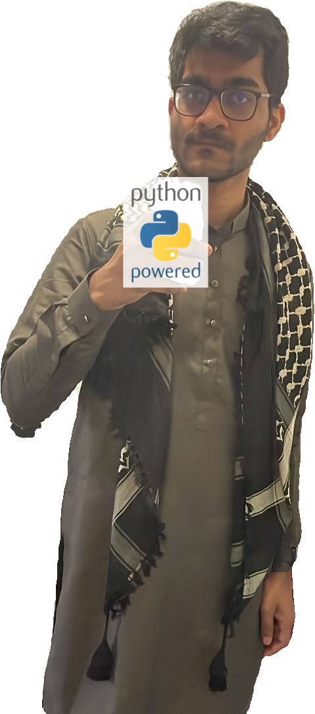
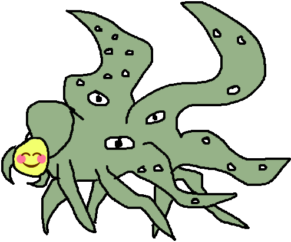

Sheikh Abdur Raheem Ali

I am Sheikh Abdur Raheem Ali, an independent alignment research engineer based in Toronto.
- Previously, I worked as a mid-level software engineer at Microsoft Security for three years. I was the youngest person ever hired at my level in Canada.
- I collaborated with some MATS scholars and mentors who were part of the Summer 2023 program.
- I was a research mentee for Berkeley AI Safety's Supervised Program in Alignment Research in Fall 2023 and returned as a project mentor for the Spring 2024 cohort.
- I was a visiting member of the London Initiative for Safe AI during Summer 2024.
- I run the CognitionTO ML Paper Reading group.
- I bought Apple's Vision Pro on launch, and use enterprise APIs for visionOS to improve my productivity.
- I make unrestricted donations to promising early-career or student researchers, ranging from CAD $100-$200 immediately to USD $16.5k over four months.
I am from the United Arab Emirates; my father is a founder and businessman from India.

Most of my work is not available to the public. However, if you're interested in watching me code, I livestream programming sessions on twitch.com/sheikheddy every Friday evening.